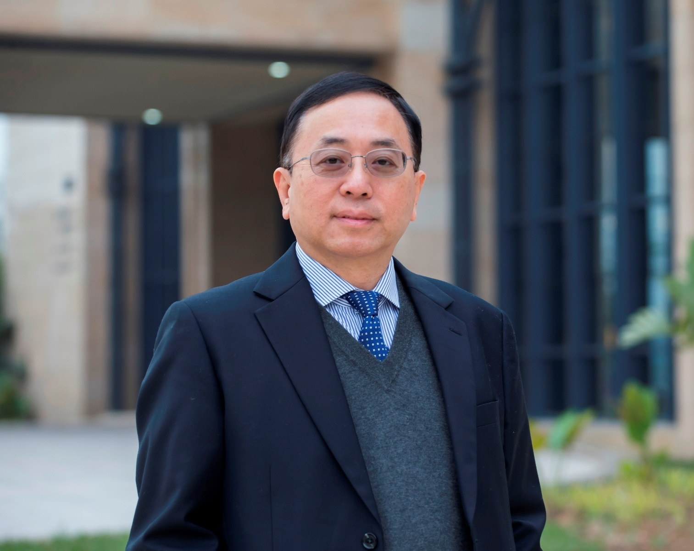
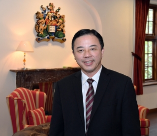
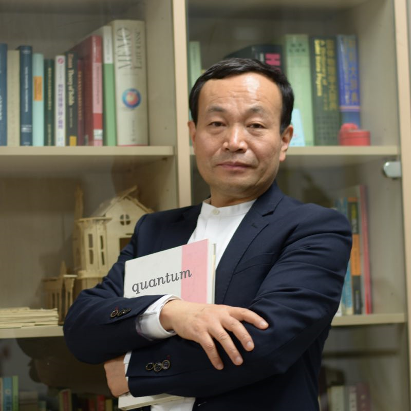
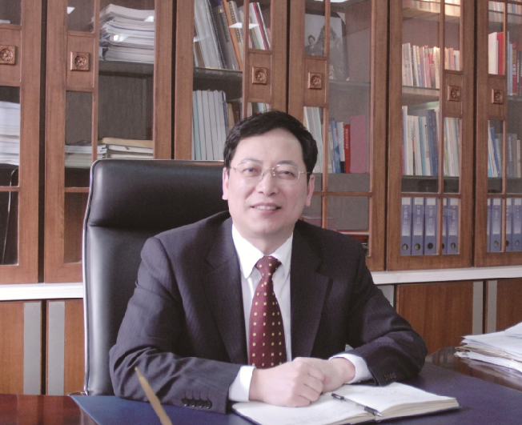

Plenary speakers
(Confirmed, more is coming)
LIONEL M. NI

Prof. Lionel M. Ni has assumed office as the Vice Rector (Academic Affairs) of the University of Macau from January 2015. A world-renowned computer scientist,
he is also Chair Professor in the Department of Computer and Information Science. Prior to coming to the University of Macau, he was Chair Professor in the
Computer Science and Engineering Department at the Hong Kong University of Science and Technology (HKUST). At HKUST, he served as Department Head (2002 to 2008),
Special Assistant to the President (2010 to 2014), Dean of Fok Ying Tung Graduate School (2011 to 2014), and Director of HKUST China Ministry of
Education/Microsoft Research Asia IT Key Lab (2004 to 2014). Before coming to HKUST, Professor Ni was a full Professor in Computer Science and Engineering
at Michigan State University where he had stayed from 1981 to 2002. He was co-founder and CEO of CC&T Technologies, Inc., Michigan (1998 to 2001) and the
program director of the U.S. National Science Foundation Microelectronic Systems Architecture Program (1995 to 1996).
Prof. Ni earned the PhD degree in electrical and computer engineering from Purdue University, West Lafayette, IN, in 1980. He has directed 54 PhD students
to completion and has published many high quality papers in the areas of pervasive computing, mobile computing, big data, sensor networks, parallel architectures,
distributed systems, high-speed networks, VLSI design automation, and parallel processing. He co-authored (with Jose Duato and Sudhakar Yalamanchili) the book
“Interconnection Networks: An Engineering Approach” in 1997 by IEEE Computer Society Press. The second edition of this book was published by Morgan Kaufmann in 2002.
His second book “Smart Phone and Next Generation Mobile Computing” (with Pei Zheng) was published in 2006 also by Morgan Kaufmann. His third book “Professional
Microsoft Smartphone Programming” (with Baijian Yang and Pei Zheng) was published by Wrox in 2007. Most of Prof. Ni’s research papers were published in
prestigious venues and his research papers have been highly cited for over 28,000 times according to Google Scholar with H-index 75. He is the owner of 8
US/China patents with more than 18 patents pending.
Please refer to
Lionel M. Ni .
Xiang Zhang

Professor Xiang Zhang is the 16th President and Vice-Chancellor of the University of Hong Kong. He is the inaugural
Ernest S. Kuh Endowed Chair Professor at UC Berkeley and the Director of Nano-scale Science and Engineering Center (SINAM). He also served as the
Director of Materials Science Division at Lawrence Berkeley National Laboratory (LBNL).
Professor Zhang is an elected member of US National Academy of Engineering (NAE), Academia
Sinica, foreign member of Chinese Academy of Sciences, and Fellow of four scientific societies: APS
(The American Physical Society), OSA (The Optical Society of America), AAAS (The American
Association for the Advancement of Science), and SPIE (The International Society of Optical
Engineering).
Professor Zhang received PhD from UC Berkeley (1996) and MS from University of Minnesota and
MS/BS from Nanjing University, China. He was an assistant professor at Pennsylvania State
University (1996-1999), and associate professor and full professor at UCLA (1999-2004) prior to
joining Berkeley faculty in 2004.
Professor Zhang’s current research focuses on materials physics, metamaterials and nano-photonics.
He has published over 320 journal papers including 70 publications in Science and Nature family
series. He has given over 320 Keynote, Plenary and Invited talks at international conferences and
institutions. He served as a Co-Chair of NSF Nanoscale Science and Engineering Annual Grantee
Conferences in 2004 and 2005, and past Chair of Academic Advisory Board for Research Center for
Applied Science (RCAS), Academia Sinica.
Please refer to
Xiang Zhang .
Dapeng Yu

俞大鹏，法国南巴黎大学固体物理实验室博士；原北京大学物理学院教授；2016年6月加入南方科技大学，担任物理系讲座教授。2000年获得国家杰出青年科学基金；
2002年获得教育部“长江学者”特聘教授；2005年获得教育部长江学者与创新团队计划--“准一维纳米结构与低维物理”项目支持；2015年当选为中国科学院技术学部院士。
2016年荣获深圳高层次专业人才称号。2017年被评为广东省“珠江人才计划”引进创新创业团队（量子科学与工程团队）带头人。
俞大鹏院士长期从事纳米线材料中关键基础科学问题的研究，为我国纳米线材料科学研究进入国际先进行列做出了重大贡献：包括解决了规模、可控制备半导体量子线材料的难题、
深入揭示了半导体量子线结构特有的新颖物理现象、系统发掘了半导体量子线的若干重大应用特性，发现了若干重要的纳米线器件效应，发明了一系列纳米加工与精确操控技术，
申请国家发明专利20余项（含多项国际PCT专利），引领了半导体纳米线材料的应用基础研究。近十年来，俞大鹏院士把研究的重点放在量子材料的可控制备，特别是量子输运性质研究方面，
并且取得长足的研究进展。
基于所取得的研究成果，俞大鹏院士共计发表300余篇论文，含Nature子刊、Physical Review Letters、Journal of the American Chemical Society、Advanced Materials、
Nano Letters、Physical Review B、Applied Physics Letters等顶级专业刊物论文400余篇，被同行参考他引一万六千余次，h因子为69。俞大鹏院士曾以第一完成人获得了2004年
度教育部提名自然科学一等奖和2007年获国家自然科学二等奖、2016年中国真空科技成就奖等。在世界著名出版公司Elsevier发布的2014、2015、2016年度在全球具有重要学术影响力的中国高
被引学者（Most Cited Chinese Researchers）榜单中，俞大鹏院士连续进入“物理与天文学科”前三名。
俞大鹏院士培养了一批优秀人才，部分毕业生在包括北京大学、清华大学、中国科技大学、南京大学、中国科学院、美国哥伦比亚大学、MIT、UCSD等名校任教；
被评选为第二届北京大学研究生“十佳导师”荣誉称号。
Please refer to
Dapeng Yu .
Changwen Miao

缪昌文，中国工程院院士，教授级高工，大学本科学历，毕业于南京工学院（现东南大学），东南大学教授、博导，现任江苏省建筑科学研究院有限公司董事长、学术带头人。
1982年2月自南京工学院毕业后进入中国水利水电科学研究院工作，主要从事建筑材料的性能分析与研究；1984年7月进入江苏省建筑科学研究所混凝土制品工艺室工作，
主要研究混凝土制品的成型工艺；1986年1月作为访问学者赴丹麦科技大学留学，主要从事水泥混凝土耐久性的研究；1987年2月回江苏省建筑科学研究院工作，
开展混凝土外加剂及高性能混凝土技术的研究与开发，先后担任建材所副所长、所长、建科院副院长、院长；2011年受聘为东南大学材料学院全职教授。
缪昌文同志是2008年何梁何利基金科学与技术创新奖获得者，江苏省“333”工程首席科学家，国务院“政府特殊津贴”的专家，建设部特聘专家，被评为江苏省首届留学回国先进个人、
南京市十大科技功臣，获全国杰出专业技术人才奖、江苏省首届创新创业人才奖和江苏省劳动模范称号。
多年来致力于高性能混凝土结构工程材料、高性能混凝土外加剂的研究与开发工作，共承担包括973、国家自然科学基金重点项目和“十一五”科技攻关项目在内的各类科研课题30余项，
先后获得国家科技进步二等奖3项，省、部级科技进步特等奖1项、一等奖3项、二等奖和三等奖共10项。获得授权的国家发明专利19项；出版专著3部，发表学术论文160余篇，其中被SCI、
EI和ISTP收录40余篇次。主持完成的“JK系列混凝土快速修补剂”，可将混凝土路面修复通车时间缩短至4～6小时；率先发明了第一代接枝共聚物混凝土外加剂；
发明了混凝土自浇筑成型起就可分阶段全过程自动测试混凝土收缩变形和早龄期毛细管气压的试验系统，建立了水泥基材料的变形与开裂评价方法。对混凝土微结构形成理论、
混凝土耐久性提升机理等均进行了具有创新性的研究。
Please refer to
Changwen Miao .